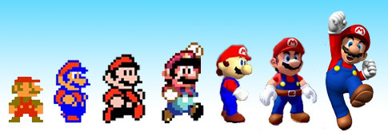

Video Games have come a long long way. From arcades designed to suck your money away, to a readily avalible system in your home.
Not only did the core principals of gaming change, but as did the expectations of varrious gamers and critics around the world. Causing the very definition of gaming to change itself. What it means, who it's for, and now it's one of the most mainstream hobbies there ever was.

The bottom line is that gaming has built upon itself. Upon it's community, upon it's experiments. And we wouldn't be at the masterful leap in technology and design we're at today if it weren't for Super Mario 64 and it's masterful 3D controls, or Megaman X's progressive gameplay.
Terms like analog control, and gameplay loop are so integrated into gaming's extensive vocabulary, that it really shows how far the activity has come, and only promises an even brighter future, as game developers and fans alike show what they know about video games. It all culimates to make a fun product that understands itself, and it's audiance.